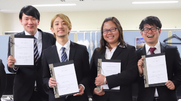

# 受賞や成果など
先端社会デザインコース（FSDコース）に関連する学生と教員の受賞＆成果発表の情報を掲載します． より詳しく知りたい方は各研究室のHPをご覧ください．
# 2020年
# 受賞
🎉 服部・小川研究室の西浦さんがthe 25th International Symposium on Artificial Life and Robotics (AROB 25th 2020) (opens new window)でYoung Author Awardを受賞しました．
# 2019年
# 査読付き論文誌への掲載
🎉
安井 友徳, 北村 尊義, 泉 朋子, 仲谷 善雄 "児童を対象とした振動型経路指示システムにおける振動角度と有用性の評価," ヒューマンインタフェース学会論文誌, Vol.21, No.2, pp.141-150 (2019)．https://doi.org/10.11184/his.21.2_141 (opens new window)
🎉
金月 寛彰, 服部 宏充 "マルチエージェントシミュレーションによるタクシー営業戦略の改善シナリオの提案," 人工知能学会論文誌, 2019, Vol.34, No.3, pp.C-IA2_1-9 (2019)．https://doi.org/10.1527/tjsai.C-IA2 (opens new window)
🎉
Xin Zhou, Yohei Murakami, Toru Ishida, Xuanzhe Liu, Gang Huang. ARM: Towards Adaptive and Robust Model for Reputation Aggregation, IEEE Transactions on Automation Science and Engineering, 2019. (in Press)
🎉
Arbi Haza Nasution, Yohei Murakami, Toru Ishida. Generating Similarity Cluster of Indonesian Languages with Semi-Supervised Clustering, International Journal of Electrical and Computer Engineering, Vol.9, No.1, 2019.
🎉
Luis Ernesto Dominguez-Rios, Takayoshi Kitamura, Tomoko Izumi, Yoshio Nakatani "Evaluation of the Aid Link Generation System for a Disaster Management Platform," The transactions of the Institute of Electrical Engineers of Japan. C, A publication of Electronics, Information and Systems Society, Vol.139, No.3, pp.247-258 (2019).
🎉
Luis Ernesto Dominguez-Rios, Takayoshi Kitamura, Tomoko Izumi, Yoshio Nakatani "Validated Animated Pictograms for the Advance Design of a Disaster Assistance Application," The transactions of the Institute of Electrical Engineers of Japan. C, A publication of Electronics, Information and Systems Society, Vol.139, No.2, pp.170-179 (2019).
# 受賞
🎉 泉・北村研究室の南和宏さんが第21回感性工学会大会 (opens new window)で優秀発表賞を受賞しました．
🎉 服部・小川研究室の鎌田翔輝さんが第18回情報科学技術フォーラム (opens new window)でFIT奨励賞を受賞しました．
# 2018年
# 査読付き論文誌への掲載
🎉
吉添衛，服部宏充，江間有沙，大澤博隆，神崎 宣次. 多様な価値観への気づき支援 – 議論の可視化と考察. 科学技術社会論研究, No.16, pp.120-132, 2018
🎉
Yuting Song, Biligsaikhan Batjargal, and Akira Maeda "Cross-Language Record Linkage based on Semantic Matching of Metadata," 日本データベース学会和文論文誌, Vol.17, No.1, 2019.
🎉
志野 直生, 山西良典, 西原 陽子 "代替食材推薦のための複数観点に基づく食材間関係の発見 -相性・役割・食感に着目して-," 知能と情報, Vol.30, No.6, pp.779-787 (2018)．
🎉
辻野雄大, 山西良典, 西原 陽子, 福本淳一 "時系列深層学習に基づく難易度間関係モデルを用いたダンスゲーム譜面難易度の自動調整," 情報処理学会論文誌, Vol.59, No.11, pp.1953-1964 (2018) ．
🎉
砂山渡, 石田純太, 川本佳代, 西原陽子 "類推による説明スキルの獲得支援システム," 情報処理学会論文誌, Vol.59, No.10, pp.1922-1931 (2018).
🎉
Yoko Nishihara, Kodai Yoshimatsu, Ryosuke Yamanishi and Satoshi Miyake "Topic Visualization System for Unfamiliar Couples in Face-to-Face Conversations," International Journal of Service and Knowledge Management, Vol.2, No.1, pp.19-30, (2018).
🎉
西原 陽子, 高山 玲央名, 菱田 賢祐, 山西良典 "コマの配置を用いた争点と玉の危険度の評価による将棋初心者の局面把握支援," 知能と情報, Vol.30, No.6, pp.796-803 (2018).
🎉
Mai Xuan Trang, Yohei Murakami, Toru Ishida. Policy-Aware Service Composition: Predicting Parallel Execution Performance of Composite Services, IEEE Transactions on Services Computing, Vol.11, No.4, pp.602-615, 2018.
🎉
Toru Ishida, Yohei Murakami, Donghui Lin, Takao Nakaguchi, Masayuki Otani. Language Service Infrastructure on the Web: Tha Language Grid, IEEE Computer, Vol.51, No.6, pp.72-81, 2018.
🎉
Kemas M. Lhaksmana, Yohei Murakami, Toru Ishida. Role-based Modeling for Designing Agent Behavior in Self-organizing Multi-agent Systems, International Journal of Software Engineering and Knowledge Engineering, Vol.28, No.1, pp.79-96, 2018.
🎉
Arbi H. Nasution, Yohei Murakami Toru Ishida. A Generalized Constraint Approach to Bilingual Dictionary Induction for Low-Resource Language Families, ACM Transactions on Asian and Low-Resource Language Information Processing, Vol.17, No.2, pp.9:1-9:29, 2018.
# 受賞
🎉 仲谷研究室の安井友徳さん，北村尊義先生，泉朋子先生，仲谷善雄先生がヒューマンインタフェースシンポジウム2018で優秀プレゼンテーション賞を受賞しました．
🎉 仲谷研究室の樋口雄大さんがThe 2018 IAENG International Conference on Data Mining and ApplicationsでBest Student Paper Awardを受賞しました．
🎉 仲谷研究室の南和宏さんがThe 2018 IAENG International Conference on Data Mining and ApplicationsでCertificate of Meritを受賞しました．
🎉 村上研究室の村上陽平先生がヒューマンインタフェース学会の論文賞を受賞しました．